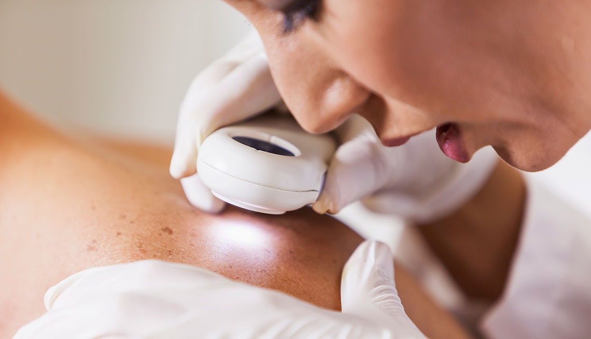

Contamos con profesionales certificados y preparados para atender tus padecimineto
Contamos con medios de diagnóstico de última tecnología para darte resultados más confiables y certeros. Utilizamos las herramientas más sofisticadas del mercado para proporcionarte un diagnóstico y atención de calidad.
